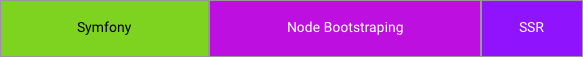
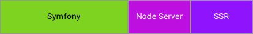
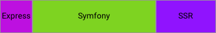

Symfony, React y 7,5 M de usuarios diarios
o como transformamos nuestra V en un nuevo MVC
Gracias a los Patrocinadores
¿Quien soy?
Miquel Company
Fullstack Developer en Kodify
-
7+ años trabajando con Symfony
El último año y medio haciendo cosas con React -
Padre de familia
Aerotrastornado, whovian y piloto FPV -
solilokiam
-
http://github.com/solilokiam

- 7sites
- 7,5M usuarios diarios
- 8500TB+ servidos al mes
- 133M requests diarias
- 30000+ horas de video servidos al día
- 600000+ videos
¿Pero qué hacemos en Kodify?

Siempre estamos buscando talento...
Join us @kodify.io
Un poco de história

Hasta Ahora
Apache, PHP5.6, Symfony 2.7, ElasticSearch, AuroraDB, Redis, Jquery, Gulp, CSS3, Chef, Cloudformation, PHPUnit, Behat, Selenium, Codeship
¿Que no nos acaba de funcionar?
-
Frontend
CSS que ha engordado
Jquery
Twig
2 versiones (desktop/mobile) -
Backend
Controladores que han cogido peso
Modelo Anémico
-
Infrastructura
Chef
Autoescalado Manual
Costes
Tiempo de Build Lento
Hace unos meses...
Nuestro site se esta quedando antiguo y necesita un lavado de cara
Empieza la lista a los reyes magos...
Queridos reyes magos...
- Limpiar y hacer nuestro CSS modular con SASS
- Poner orden a JQuery
- Mobile First
- Poner los controladores a dieta
- Cambiar la manera como orquestramos
- Poner orden a las plantillas de twig
- DDD
- Jenkins
- Symfony 3
- Live Reload
Mobile First
Más de la mitad de nuestros users utilizan la versión mobile
Nuestra aplicacion ha de ser:
- Progresiva: Ha de funcionar para todos los usuarios. La mejora progresiva es el principio central.
- Responsive: Se ha de ver bien en todos los dispositivos. Escritorio, Movil, Tablet, o lo que sea...
- Conection Independent: Ha de poder funcionar bien, en redes lentas, o sin conexion.
- Segura: Han de estar servidas por HTTPS/TLS
- Ligera: Minimizar al máximo la carga, tanto de datos como de CPU

React All The Things
¿Como lo hemos montado?
Componentes independientes
Crear una serie de componentes independientes e insertarlos en nuestras plantillas Twig
Pros
- Facil de hacer
- Prototipaje rapido
- Curva de aprendizaje
Cons
- No aprovechar toda la potencia
- No muy SEO-Friendly
- Comunicación entre componentes


Single Page App
La aplicación carga una única página y la actualiza dinámicamente mientras el usuario interacciona con ella.
Pros
- Comunicación entre componentes
- Flexible
- SEO-Friendly con SSR
- Potente
Cons
- Curva de aprendizaje
- V => MVC
- Complicado de empezar
Server Side Rendering
Sin esto esta charla no tendria sentido.
- Nuestra SPA renderiza el HTML en el lado de servidor.
- Los Robots reciben contenido que pueden entender.
- React se enlaza con el HTML renderizado en cliente
- En Server Side no hay window, document, etc...
import React from 'react';
import { renderToString } from 'react-dom/server';
const renderApp = () => {
const app = (
<h1>Hello, world!</h1>
);
return renderToString(component);
};
SSR y Symfony
https://github.com/Limenius/ReactBundle
{% extends 'base.html.twig' %}
{% block body %}
{{ react_component('ReactApp', {'props': props}) }}
{% endblock %}
{% block javascripts %}
<script src="{{ asset('build/app.js') }}"></script>
{% endblock %}
import ReactOnRails from 'react-on-rails'
import ReactApp from './server/ReactApp'
ReactOnRails.register({ ReactApp })
/**
* @Route("/", name="homepage")
*/
public function homeAction(Request $request)
{
$serializer = $this->get('serializer');
return $this->render('recipe/home.html.twig', [
'props' => $serializer->normalize(
['foo' => $this->get('foo.repository')->findAll(),
'baseUrl' => $this->generateUrl('homepage'),
'location' => $request->getRequestUri()
])
]);
}
Al 99% de la gente ya le funciona esta solución...
...A nosotros no
-
PhpExecJs
 -
External Node Server

*No estan a escala

¿Que hacemos con ExpressJS?
Una aplicacion muy simple con solamente 2 misiones.
-
Renderizar SSR
Controlador único.
Routing gestionado desde React.
Cache de Vista -
Proxy de la API
Frontend no se contecta directamente con el backend.
Cacheamos la mayoria de responses.
Cocinamos datos.
-
Worst Case Scenario
 -
Best Case Scenario
*No estan a escala
¿Y el Backend?
Backend
Hemos reescrito la aplicación antigua completamente. Utilizando "mejores practicas".
CQRS
Lectura desde ElasticSearch, Escritura a MySQL (Aurora)DDD
Separación por capas muy lightweight.Command Bus
Utilizamos Tactician.Serializacion
Nuestro modelo devuelve objectos, colecciones de objetos, todo el trabajo lo hace el jms_serializer.Legacy
Hemos integrado mucho código legacy desacoplandolo con DDD.Stateless
Nuestro back es completamente stateless. Toda la autenticación funciona a traves de JSON Web Token.
public function getHomeAction(ParamFetcher $fetcher): array
{
$req = new GetHomeRequest($fetcher->all());
return $this->handle($req);
}
public function handle(GetHomeRequest $request): array
{
$isMobile = $request->isMobile();
$topChannels = $this->bus->handle(new GetTopChannelsRequest($request->getRaw([
CommandRequest::LIMIT => self::TOP_CHANNELS_QTY
])));
$response = array_merge(
[
'mostViewedVideos' => $this->bus->handle(new GetMostViewedVideosRequest($request->getRaw([
CommandRequest::LIMIT => $isMobile ? self::MOBILE_VIDEOS_MOST_VIEWED_QTY : self::MOST_VIEWED_VIDEOS_QTY
]))),
'mostRecentVideos' => $this->bus->handle(new GetRecentVideosRequest($request->getRaw([
CommandRequest::LIMIT => $isMobile ? self::MOBILE_VIDEOS_MOST_RECENT_QTY : self::RECENT_VIDEOS_QTY
]))),
'topChannels' => array_slice($topChannels, 0, $isMobile ? self::MOBILE_TOP_CHANNELS_QTY : self::TOP_CHANNELS_TO_DISPLAY_QTY),
'featuredPornstars' => $this->bus->handle(new GetPornstarsRequest($request->getRaw([
CommandRequest::LIMIT => $isMobile ? self::MOBILE_FEATURED_PORNSTARS_QTY : self::FEATURED_PORNSTARS_QTY
]))),
],
$this->handleEmbedded($request)
);
return $isMobile
? $response
: array_merge($response, [
'topChannelsVideos' => $this->getTopChannelsVideos($request, $topChannels)
])
;
}
Routing
- Completamente gestionado desde React
- React Router 4 (aunque empezamos con el 3)
- No conectado con el store
- Composition everywhere
<Provider store={this.store}>
<IntlProvider>
<Router history={history}>
<App>
<RouteHandler>
<RouteRenderer />
</RouteHandler>
</App>
</Router>
</IntlProvider>
</Provider>
<RouteRenderer>
Traduce de nuestro fichero de configuración a algo que entiende ReactRouter
export default [
{
name: 'video_page',
path: '/videos/:slug\\_:uuid',
component: Video,
fetchData: dataFetcher.fetchVideoData,
},
{
name: 'user_playlists',
path: '/users/:username/playlists',
component: UserPlaylists,
requireAuth: true,
},
{
name: 'home',
path: `/:orientation(${orientations.ORIENTATION_GAY}|${orientations.ORIENTATION_SHEMALE})?/`,
component: Home,
fetchData: dataFetcher.fetchHomeData,
exact: true,
},
];
<RouteHandler>
El chico listo de clase
-
Peticion de datos al backend
Utilizando promesas y de manera asincrona. -
Peticion de componentes (code splitting)
La optimización sin querer... -
Mount & Unmount
No realizamos la "navegación" hasta que no tenemos los datos necesarios.